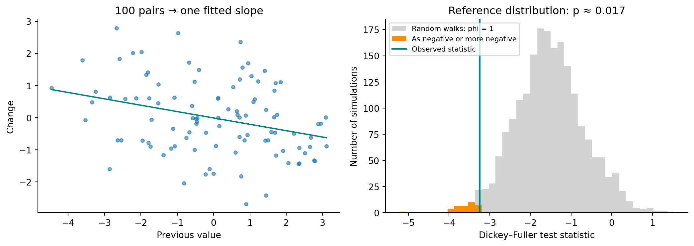

import numpy as np
import pandas as pd
import matplotlib.pyplot as plt
from IPython.display import display
from statsmodels.regression.linear_model import OLS
from statsmodels.tools.tools import add_constant
from statsmodels.tsa.stattools import adfuller
plt.rcParams.update({"figure.figsize": (10, 3), "axes.spines.top": False,
"axes.spines.right": False})Dickey–Fuller: from observations to a p-value
This optional worked example follows 101 observations all the way to a p-value.
Start with AR(1)
Start with AR(1):
X_t=\phi X_{t-1}+\varepsilon_t.
Subtract X_{t-1} from both sides:
X_t-X_{t-1}=\phi X_{t-1}-X_{t-1}+\varepsilon_t.
Take out the common factor X_{t-1}:
X_t-X_{t-1}=(\phi-1)X_{t-1}+\varepsilon_t.
When \phi=1, the coefficient \phi-1 is zero:
X_t-X_{t-1}=\varepsilon_t.
That is our random walk: each new value is the previous value plus new noise.
Call the change \Delta X_t=X_t-X_{t-1} and the coefficient \gamma=\phi-1. We fit
\Delta X_t=c+\gamma X_{t-1}+\varepsilon_t,
where c allows a constant term. The null hypothesis is \gamma=0, equivalent to \phi=1.
From observations to one estimated coefficient
Each pair of consecutive observations gives one row: the previous value X_{t-1} and the change \Delta X_t. We fit one line through all the rows. Its slope estimates \gamma.
The number 1 belongs to \phi, not to the individual changes. Each change can be positive, negative, or zero.
Here are 101 example observations, giving 100 pairs: we show the first and last rows. Change 0.75 to 1 to try a random walk.
rng_df = np.random.default_rng(8)
x_df = np.zeros(101)
for t in range(1, len(x_df)):
x_df[t] = 0.75 * x_df[t - 1] + rng_df.normal()
pairs = pd.DataFrame({"previous value": x_df[:-1],
"current value": x_df[1:],
"change": np.diff(x_df)}, index=np.arange(1, 101))
with pd.option_context("display.max_rows", 8, "display.min_rows", 8):
display(pairs.round(3))| previous value | current value | change | |
|---|---|---|---|
| 1 | 0.000 | -1.738 | -1.738 |
| 2 | -1.738 | -2.640 | -0.902 |
| 3 | -2.640 | -3.341 | -0.701 |
| 4 | -3.341 | -2.858 | 0.484 |
| ... | ... | ... | ... |
| 97 | -1.521 | -0.477 | 1.043 |
| 98 | -0.477 | -0.665 | -0.187 |
| 99 | -0.665 | -1.119 | -0.455 |
| 100 | -1.119 | -1.460 | -0.340 |
100 rows × 3 columns
Fit all 100 pairs together
The fitted slope will almost never be exactly zero, even for a random walk. We need to account for how uncertain the estimate is.
The fit gives a slope \hat\gamma and a standard error, which measures the uncertainty in that slope. Divide the slope by its standard error:
\tau_{\mathrm{observed}}=\frac{\hat\gamma-0}{\mathrm{SE}(\hat\gamma)}.
This is the Dickey–Fuller test statistic: one number summarizing this whole record. A more negative value is stronger evidence against a unit root.
df_fit = OLS(pairs["change"], add_constant(pairs["previous value"])).fit()
gamma_hat = df_fit.params.iloc[1]
standard_error = df_fit.bse.iloc[1]
observed_statistic = gamma_hat / standard_error
print(f"Estimated gamma = {gamma_hat:.4f}")
print(f"Estimated phi = 1 + gamma = {1 + gamma_hat:.4f}")
print(f"Standard error = {standard_error:.4f}")
print(f"Test statistic = {gamma_hat:.4f} / {standard_error:.4f} = {observed_statistic:.3f}")Estimated gamma = -0.1983
Estimated phi = 1 + gamma = 0.8017
Standard error = 0.0610
Test statistic = -0.1983 / 0.0610 = -3.253Where does the p-value come from?
Suppose the null hypothesis is true: \phi=1. Generate a random walk of the same length, fit the same line, and record its statistic. Repeat 2,000 times.
Now we have 2,000 statistics from 2,000 random walks. Their histogram shows what values are plausible under the null hypothesis. It is the distribution of the test statistic, not the distribution of the individual changes.
The approximate p-value is the fraction of these statistics that are as negative as, or more negative than, the statistic from our observed record:
p\approx\frac{\text{number of simulated statistics }\leq\tau_{\mathrm{observed}}}{2000}.
This simulation uses zero-drift Gaussian random walks, the same sample size, and the same regression settings each time. The Dickey–Fuller reference distribution is not an ordinary normal or Student’s t distribution.
rng_null = np.random.default_rng(2026)
null_statistics = np.zeros(2000)
for i in range(len(null_statistics)):
random_walk = np.r_[0, rng_null.normal(size=100).cumsum()]
null_fit = OLS(np.diff(random_walk), add_constant(random_walk[:-1])).fit()
null_statistics[i] = null_fit.tvalues[1]
extreme = null_statistics <= observed_statistic
print(f"{extreme.sum()} of {len(extreme)} random walks gave a statistic this negative or more negative.")
print(f"Simulation p-value ≈ {extreme.mean():.3f}")34 of 2000 random walks gave a statistic this negative or more negative.
Simulation p-value ≈ 0.017fig, ax = plt.subplots(1, 2, figsize=(11, 4))
previous = pairs["previous value"]
ax[0].scatter(previous, pairs["change"], s=15, alpha=0.6)
line_x = np.array([previous.min(), previous.max()])
ax[0].plot(line_x, df_fit.params.iloc[0] + gamma_hat * line_x, color="teal")
ax[0].set(xlabel="Previous value", ylabel="Change", title="100 pairs → one fitted slope")
bins = np.histogram_bin_edges(null_statistics, bins=40)
ax[1].hist(null_statistics, bins=bins, color="lightgray", label="Random walks: phi = 1")
ax[1].hist(null_statistics[extreme], bins=bins, color="darkorange", label="As negative or more negative")
ax[1].axvline(observed_statistic, color="teal", linewidth=2, label="Observed statistic")
ax[1].set(xlabel="Dickey–Fuller test statistic", ylabel="Number of simulations",
title=f"Reference distribution: p ≈ {extreme.mean():.3f}")
ax[1].legend(fontsize=8)
fig.tight_layout()
A small shaded fraction means this result would be unusual for a random walk. That is evidence against the unit-root hypothesis; it is not the probability that the hypothesis is true.
adfuller gets an approximate p-value from a precomputed Dickey–Fuller reference distribution, so it does not need to run these simulations. With no extra lagged changes, it checks the same simple case:
df_result = adfuller(x_df, maxlag=0, regression="c", autolag=None)
df_pvalue = df_result.pvalue if hasattr(df_result, "pvalue") else df_result[1]
print(f"statsmodels p-value ≈ {df_pvalue:.3f}")statsmodels p-value ≈ 0.017The two p-values should be close, not identical: our simulation is finite and adfuller uses an approximation to the reference distribution.
What does “augmented” add? It includes some previous changes as extra predictors when estimating \gamma. We still get one coefficient, one statistic, and one p-value for the whole series. In the practice, AIC selects up to 12 lagged changes (fewer for short records).
- p-value < 0.05: evidence against a unit root.
- p-value ≥ 0.05: not enough evidence to reject a unit root.
This still does not test for constant variance or the absence of seasonality.